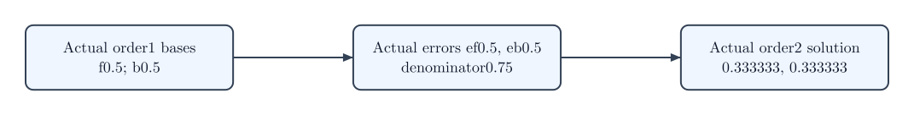
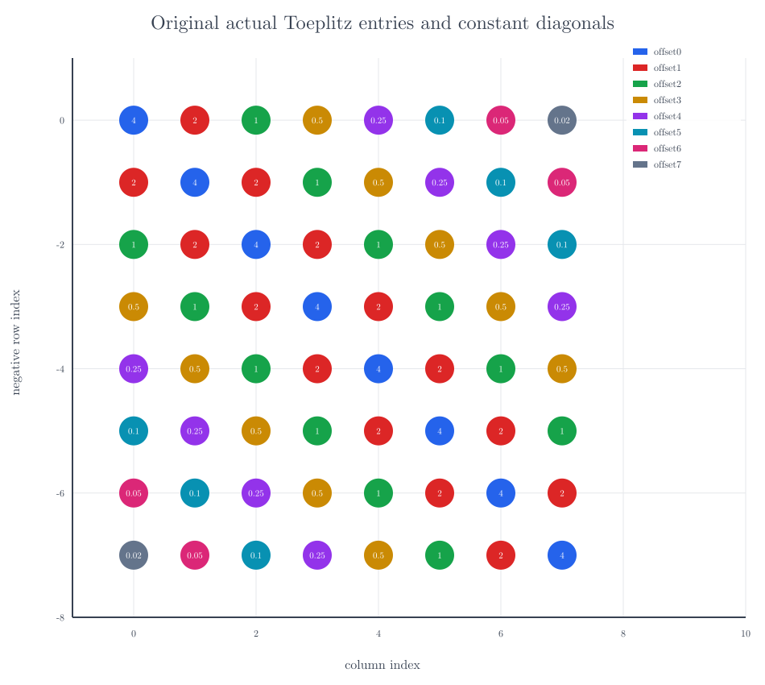
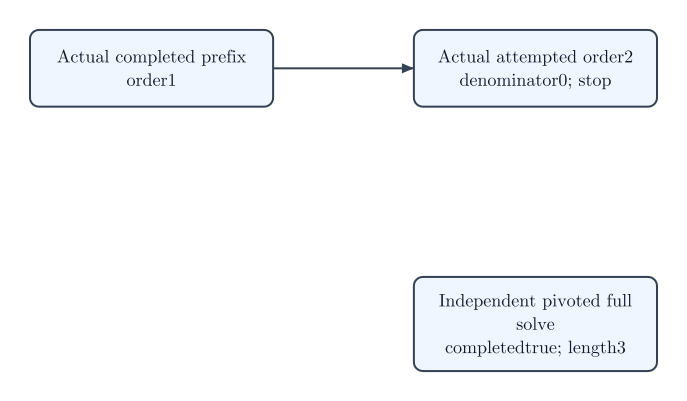
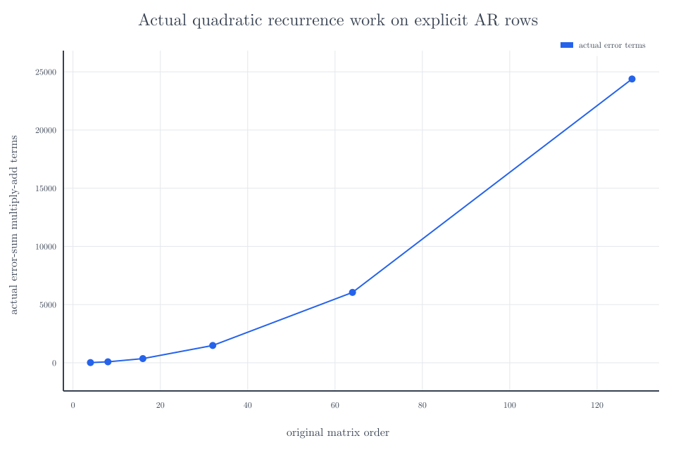

Levinson recursion for symmetric Toeplitz systems
Abstract
Constant diagonals let an unpivoted Toeplitz solver grow a solution one leading order at a time in quadratic work. We inspect its actual forward/backward vectors and error sums, retain the original8-by-8 example, compare against a separate pivoted dense solver and expose a nonsingular matrix whose leading block makes this recurrence break down. Finite output and a small residual do not certify good conditioning or forward accuracy.
Growing a leading system
A symmetric Toeplitz matrix is T(i,j)=r[abs(i−j)], entirely determined by its first row. At leading order s, the recurrence maintains vectors f and b satisfying T_s*f=e_first and T_s*b=e_last, plus the current solution x. Extending to order s+1 produces three actual boundary error sums ef, eb and ex. Padding f on the right and b on the left gives
Toeplitz shift structure makes the padded basis combination cancel every old equation while correcting the new boundary equation. Starting with f=b=1/r0 and x=rhs0/r0 proves the invariant inductively whenever each division is defined. The denominator is an unpivoted leading-block requirement, not a full-matrix singularity test. Positive definiteness avoids exact leading-block singularities mathematically, but finite precision can still amplify error.
Tiny actual extension
For row(2,1), rhs(1,1), the order1 basis is0.5, both boundary errors are0.5 and the actual denominator is0.75. The new solution is(1/3,1/3). Every displayed error, basis and solution below is captured from one producing native execution.
#include <dm/dm.hpp>
int main() {
std::filesystem::create_directories("build");
auto t = dm::algorithms::levinson_trace({2, 1}, {1, 1});
auto e = t.attempts[0];
std::print("| actual target order | actual forward error | actual backward error | actual solution " "error | actual denominator |\n| ---: | ---: | ---: | ---: | ---: |\n| {} | {} | {} | {} | " "{} |\n\n| actual solution index | actual final value |\n| ---: | ---: |\n",
e.order, e.forward_error, e.backward_error, e.solution_error,
e.denominator);
for (std::size_t i = 0; i < t.analysis.solution.size(); ++i)
std::print("| {} | {:.12f} |\n", i, t.analysis.solution[i]);
dm::graphics::Diagram d;
d.node("old", {0, 0},
std::format("Actual order1 bases\nf{}; b{}", t.states[0].forward[0],
t.states[0].backward[0])).node("errors", {6, 0},
std::format(
"Actual errors ef{}, eb{}\ndenominator{}",
e.forward_error,
e.backward_error,
e.denominator)).node(
"new", {12, 0},
std::format("Actual order2 solution\n{:.6f}, {:.6f}",
t.analysis.solution[0], t.analysis.solution[1])).edge(
"old", "errors").edge("errors", "new").save_svg("build/levinson_extension.svg");
}| actual target order | actual forward error | actual backward error | actual solution error | actual denominator |
|---|---|---|---|---|
| 2 | 0.5 | 0.5 | 0.5 | 0.75 |
| actual solution index | actual final value |
|---|---|
| 0 | 0.333333333333 |
| 1 | 0.333333333333 |

Original8-by-8 symmetric Toeplitz system
Retain row(4,2,1,0.5,0.25,0.1,0.05,0.02) and all-ones right-hand side. Materialize its constant diagonals with the native helper, solve once with complete native trace and independently compare the final solution with the library’s separate partial-pivoted Gaussian elimination. That second method is a reference comparison, not a rigorous error certificate. The full residual and normwise backward-error ratio are observed in widened arithmetic against the actual stored row/rhs.
The figure’s constant-color diagonals show the actual original matrix entries, not a claimed covariance or conditioning result. Values are printed in the solution table; every prefix diagnostic below uses its captured real solution, never a fresh Levinson solve for that prefix.
#include <dm/dm.hpp>
int main() {
std::filesystem::create_directories("build");
std::vector<double> r{4, 2, 1, .5, .25, .1, .05, .02}, b(8, 1);
auto t = dm::algorithms::levinson_trace(r, b);
auto matrix = dm::algorithms::symmetric_toeplitz_matrix(r);
auto g = dm::algorithms::gaussian_elimination(matrix, b);
auto d = dm::algorithms::levinson_residual(r, b, t.analysis.solution);
std::print("| original index | actual Levinson solution | independent pivoted dense solution |\n| ---: " "| ---: | ---: |\n");
for (std::size_t i = 0; i < 8; ++i)
std::print("| {} | {:.12f} | {:.12f} |\n", i, t.analysis.solution[i],
g.x[i]);
std::print("\nActual widened residual infinity norm {:.12g}; actual normwise backward-error ratio " "{:.12g}.\n\n| actual completed prefix | actual forward basis first entry | actual solution " "first entry |\n| ---: | ---: | ---: |\n",
d.infinity_norm, d.backward_error);
for (auto &s : t.states)
std::print("| {} | {:.12f} | {:.12f} |\n", s.order, s.forward[0],
s.solution[0]);
auto p = dm::graphics::RPlot::create();
std::vector<dm::graphics::RGB> colors{{37, 99, 235}, {220, 38, 38},
{22, 163, 74}, {202, 138, 4},
{147, 51, 234}, {8, 145, 178},
{219, 39, 119}, {100, 116, 139}};
for (std::size_t k = 0; k < 8; ++k) {
std::vector<double> x, y;
for (std::size_t i = 0; i < 8; ++i)
for (std::size_t j = 0; j < 8; ++j)
if ((i > j ? i - j : j - i) == k) {
x.push_back(j);
y.push_back(-double(i));
}
p.points(x, y, std::format("offset{}", k), colors[k], 18);
}
for (std::size_t i = 0; i < 8; ++i)
for (std::size_t j = 0; j < 8; ++j)
p.text(j, -double(i), std::format("{}", matrix[i][j]),
{255, 255, 255}, 11);
p.size(950, 850).x_limits(-1, 10).y_limits(-8, 1).title(
"Original actual Toeplitz entries and constant diagonals").x_label(
"column index").y_label("negative row index").save_svg(
"build/levinson_original.svg");
}| original index | actual Levinson solution | independent pivoted dense solution |
|---|---|---|
| 0 | 0.167649268237 | 0.167649268237 |
| 1 | 0.083538184082 | 0.083538184082 |
| 2 | 0.084382334802 | 0.084382334802 |
| 3 | 0.082634794716 | 0.082634794716 |
| 4 | 0.082634794716 | 0.082634794716 |
| 5 | 0.084382334802 | 0.084382334802 |
| 6 | 0.083538184082 | 0.083538184082 |
| 7 | 0.167649268237 | 0.167649268237 |
Actual widened residual infinity norm 1.30917412328e-16; actual normwise backward-error ratio 4.53620757566e-17.
| actual completed prefix | actual forward basis first entry | actual solution first entry |
|---|---|---|
| 1 | 0.250000000000 | 0.250000000000 |
| 2 | 0.333333333333 | 0.166666666667 |
| 3 | 0.333333333333 | 0.166666666667 |
| 4 | 0.333333333333 | 0.166666666667 |
| 5 | 0.333333333333 | 0.166666666667 |
| 6 | 0.333356483089 | 0.168067226891 |
| 7 | 0.333362271432 | 0.167369804274 |
| 8 | 0.333363197763 | 0.167649268237 |

Nonsingular full matrix, singular leading block
The row(1,1,0) defines the matrix[[1,1,0],[1,1,1],[0,1,1]], whose determinant is−1. It is invertible, but its leading2-by-2 block is singular. This unpivoted recurrence encounters exact denominator0 at order2 and cannot continue. The analysis API explicitly returns solved=false, breakdown_order2 and only the last completed one-element prefix; that partial vector is not a solution of the full system. The ordinary solve throws. The separate pivoted dense solver succeeds on the full original matrix.
#include <dm/dm.hpp>
int main() {
std::filesystem::create_directories("build");
std::vector<double> r{1, 1, 0}, b{1, 2, 3};
auto t = dm::algorithms::levinson_trace(r, b);
auto g =
dm::algorithms::gaussian_elimination(dm::algorithms::symmetric_toeplitz_matrix(r),
b);
bool threw = false;
try {
auto x = dm::algorithms::levinson_solve(r, b);
} catch (const std::domain_error &) {
threw = true;
}
std::print("| actual Levinson solved | actual breakdown order | actual completed prefix length | actual " "failed denominator | ordinary solve threw | pivoted full solve completed |\n| --- | ---: | " "---: | ---: | --- | --- |\n| {} | {} | {} | {} | {} | {} |\n",
t.analysis.solved, t.analysis.breakdown_order,
t.analysis.solution.size(), t.attempts.back().denominator, threw,
g.solved);
std::print("\nActual pivoted full solution: {}, {}, {}.\n", g.x[0], g.x[1],
g.x[2]);
dm::graphics::Diagram d;
d.node("one", {0, 2},
std::format("Actual completed prefix\norder{}", t.states.back().order)).node("fail", {6, 2}, std::format("Actual attempted order{}\ndenominator{}; stop", t.attempts.back().order, t.attempts.back().denominator)).node("dense", {6, -2}, std::format("Independent pivoted full solve\ncompleted{}; length{}", g.solved, g.x.size())).edge("one", "fail").save_svg("build/levinson_breakdown.svg");
}| actual Levinson solved | actual breakdown order | actual completed prefix length | actual failed denominator | ordinary solve threw | pivoted full solve completed |
|---|---|---|---|---|---|
| false | 2 | 1 | 0 | true | true |
Actual pivoted full solution: -1, 2, 1.

Quadratic work and residual observations
At extension s→s+1, three error sums evaluate3*s scalar multiply/add terms and three new vectors write3*(s+1) entries. Completing n orders therefore evaluates3*n*(n−1)/2 error terms and3*((n*(n+1)/2)−1) extension entries, in addition to initialization. These selected counters exclude validation, allocation, capture and residual work. The following actual AR(1)-shaped rows r_k=0.8^k are positive definite mathematically, but neither that fact nor small observed residuals supplies a universal floating-point stability guarantee. Each row is solved once in count-only mode; residuals are independent additional diagnostics.
#include <dm/dm.hpp>
int main() {
std::filesystem::create_directories("build");
std::vector<double> x, y;
std::print("| original order | actual completed orders | actual error multiply-add terms | actual " "extension vector entries | actual widened residual norm | actual normwise backward-error " "ratio |\n| ---: | ---: | ---: | ---: | ---: | ---: |\n");
for (int n : {4, 8, 16, 32, 64, 128}) {
std::vector<double> r(n), b(n, 1);
for (int k = 0; k < n; ++k)
r[k] = std::pow(.8, k);
auto a = dm::algorithms::levinson_analyze(r, b);
auto d = dm::algorithms::levinson_residual(r, b, a.solution);
std::print("| {} | {} | {} | {} | {:.12g} | {:.12g} |\n", n,
a.work.completed_orders, a.work.dot_products,
a.work.vector_updates, d.infinity_norm, d.backward_error);
x.push_back(n);
y.push_back(a.work.dot_products);
}
auto p = dm::graphics::RPlot::create();
p.line(x, y, "actual error terms", {37, 99, 235}, 2).points(x, y, "",
{37, 99, 235}, 5).title("Actual quadratic recurrence work on explicit AR rows").x_label("original matrix order").y_label("actual error-sum multiply-add terms").save_svg("build/levinson_work.svg");
}| original order | actual completed orders | actual error multiply-add terms | actual extension vector entries | actual widened residual norm | actual normwise backward-error ratio |
|---|---|---|---|---|---|
| 4 | 4 | 18 | 27 | 7.39425881635e-17 | 2.64080672013e-17 |
| 8 | 8 | 84 | 105 | 6.22332047007e-17 | 1.57472683959e-17 |
| 16 | 16 | 360 | 405 | 9.54097911787e-17 | 1.84861883165e-17 |
| 32 | 32 | 1488 | 1581 | 1.52438825451e-16 | 2.60167256798e-17 |
| 64 | 64 | 6048 | 6237 | 2.04046848862e-16 | 3.40302761123e-17 |
| 128 | 128 | 24384 | 24765 | 2.04805790383e-16 | 3.41343162525e-17 |

Contracts and verification
Complete row/rhs shapes and finite values are checked before indexing; both empty is valid. Actual finite double operation order is preserved and nonfinite produced arithmetic throws. Exact-zero initial diagonal or extension denominator is explicit breakdown, with no arbitrary small-denominator tolerance. Negative but nonsingular leading systems are allowed; no blanket positive-definiteness claim is made. Scalar solve throws on breakdown; analysis/trace return the last completed prefix and a false solved flag.
Full conservative trace admission counts2*n input values, sum over k=1..n of(1+3*k) completed-state/vector records and n−1 possible attempts before copying or computing. Actual captured_entries can be smaller on breakdown. The million-entry default excludes scalar fields, capacities/output/runtime copies and bytes/RAM;0 disables only the optional cap. States and inputs are owned and come from one actual execution, with no repeated-prefix reconstruction. Widened residual evaluation is additional O(n^2) work and does not certify forward accuracy.
Independent NumPy dense solves and widened residual observations verified30
AR-shaped systems and1230 actual extension records; native tests separately
check every original8-by-8 prefix against pivoted solves and inverse-column
residuals, analytic AR inverse columns and the invertible full-matrix breakdown
control. Another500 ordinary systems matched the frozen solution vectors
bitwise. Shape/nonfinite/overflow, empty, conservative quota and ownership
controls pass; residuals remain observations rather than forward-error
certificates. The complete ten-report batch passed77 native CTest cases,39
directly instrumented ASan/UBSan cases,106 compiled/executed public
examples,479/479 scoped definitions and ten representative clangd hovers. All4
complete report programs executed and all4 native figures were visually
reviewed. HTML/Markdown computed result and identical source/build/export figure
bytes passed verification. Repeatable receipts are retained under
build/mepml-conversion/batch-194-203/.
References
N. Levinson, The Wiener(Root Mean Square) Error Criterion in Filter Design and Prediction, Journal of Mathematics and Physics25,261–278. The publisher dates this volume1946; the work is also commonly cited as1947. This implementation is an unpivoted symmetric Toeplitz prefix recurrence, with its actual arithmetic and breakdown domain stated explicitly rather than claiming universal numerical stability.